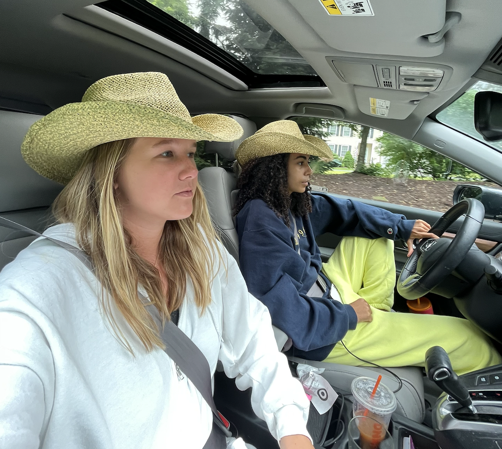

Past Work Experience
Babysitting
I started working when I was 15 years old. I am from a small town where everyone knows each other for the most part, so I would babysit fairly often for families around town or for my parents friend’s kids. Although it wasn’t always a consistent job, it was still nice to be helping out every now and again. When I was 17 I started working as a nanny for a family with a two year old little girl named Stella. I worked 7am-7pm six days a week - this meant I was waking up, dressing, bathing, feeding, and putting Stella to sleep. This was definitely more challenging than I anticpated when I took the job but it was consistent pay and the family I worked for was so kind! I still babysit every now and again, but not for a specific family, just whenever I get a text from someone asking for my help.
Camp Counselor
I worked as a camp counselor the summer of 2018 and 2019 at a summer camp called Summer at Wooster. I worked five days a week from 8am-5:30pm and this was probably my least favorite job I have ever had. It was exhausting and I had a very mean boss. I worked with groups of kids from the ages of 3-14 - I preferred working with the younger kids because the middle schoolers were so rude. The only upside was that I got to work with all my close friends and that was great.

Lacrosse Coach
I worked as a lacrosse coach the summers of 2017,2018,2019,and 2020. I was the varsity lacrosse captain every year of highschool and was recognized as the top player in the New England League - lacrosse was a large part of my high school career. I really loved playing it and the fact that I got to play with my best friends Sav and Darb was great. Sav and I decided to create a summer team for girls between the ages of 8-12 and we welcomed all levels of skill. We wanted to teach them how to love the sport. It was a great experience and coaching was very fun.

Current Employment
Lifeguard
I currently work as a beach lifeguard supervisor. I started last year and it is the most challenging, yet rewarding, job I have ever had. I love my coworkers and every summer I look forward to going back to work. It requires a lot of training and it can be very frustrating and stressful at times, but it has taught me a lot. Sav also works this job with me - it has become a tradition of sorts that me and Sav work together every summer, no matter the job. However, this summer is probably the last summer where we will work together which is upsetting.
The image above is me and sav on our way home from lifeguard training in May. We had to train 10 hours a day before the season started - it was exhausting.
Although this is not where I lifeguard, here is a video of what general beach lifeguard training can look like: